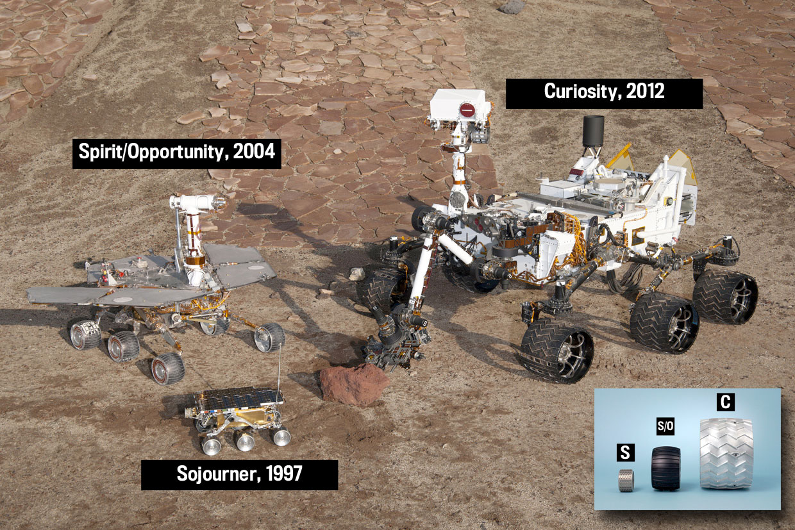
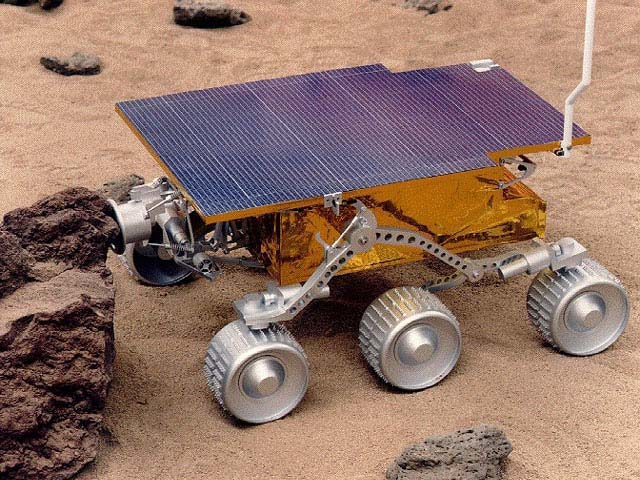
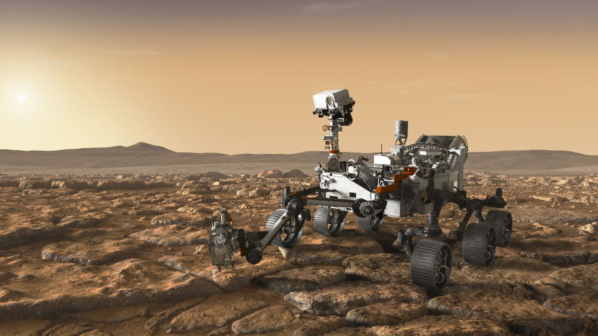

FOTOGRAFÍA
NOMBRE
AÑO
LOGRO


FOTOGRAFÍA |
NOMBRE |
AÑO |
LOGRO |
 |
|  | Mars Pathfinder | 1997 | Demuestra que es posible que un pequeño robot llegue a Marte | |
|
Spirit y Opportunity | 2004 | Son dos robots gemelos, con instrumentos para analizar las rocas en busca de agua | |
|
Curiosity | 2012 | Transporta instrumentos científicos más avanzados | |
|  | Perseverance | 2021 | Además de instrumentos científicos, incorpora cámaras y micrófonos para transmitir |